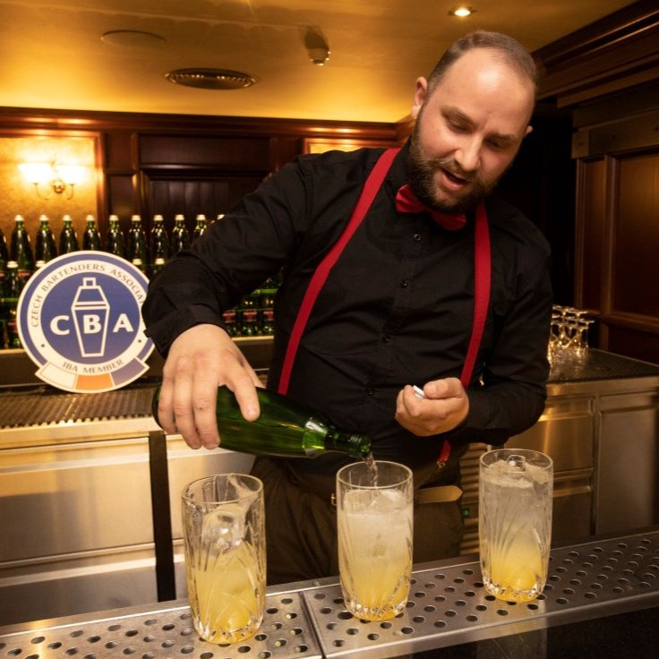
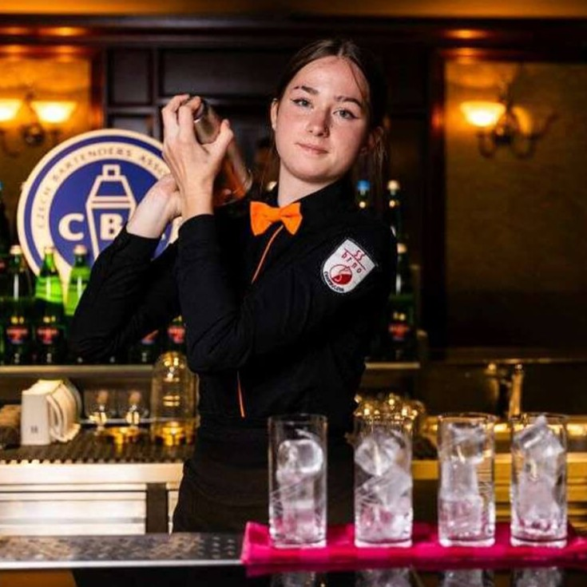
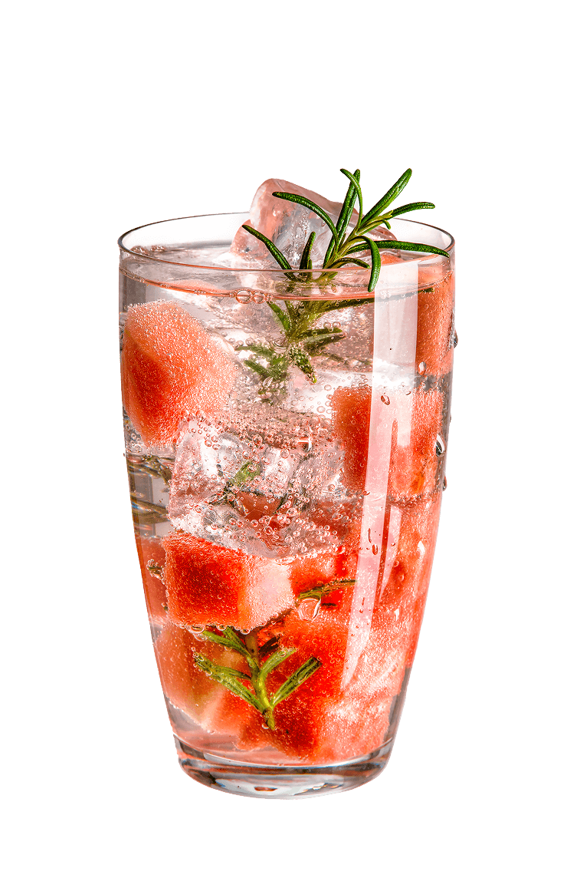
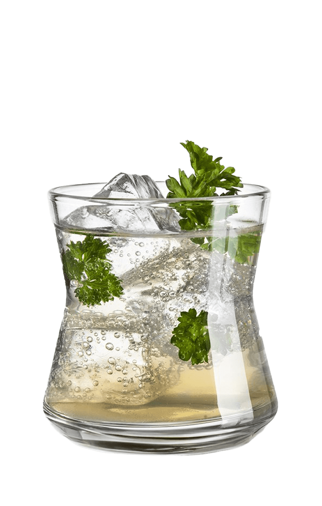
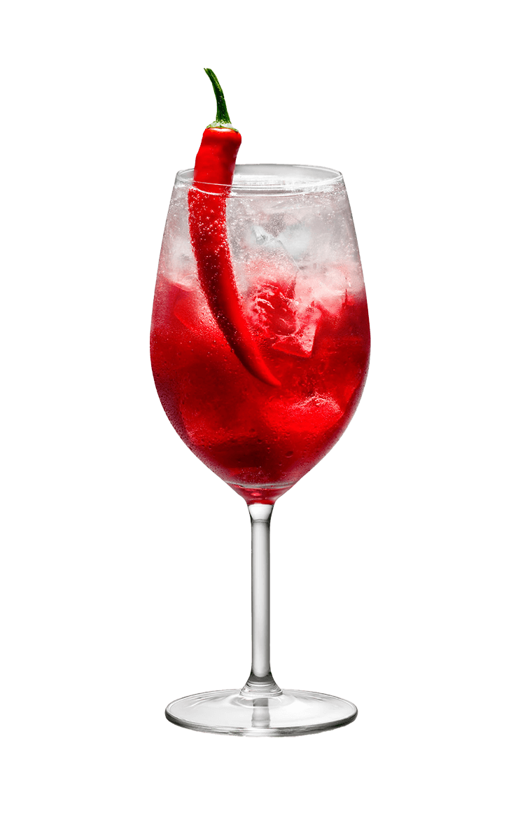
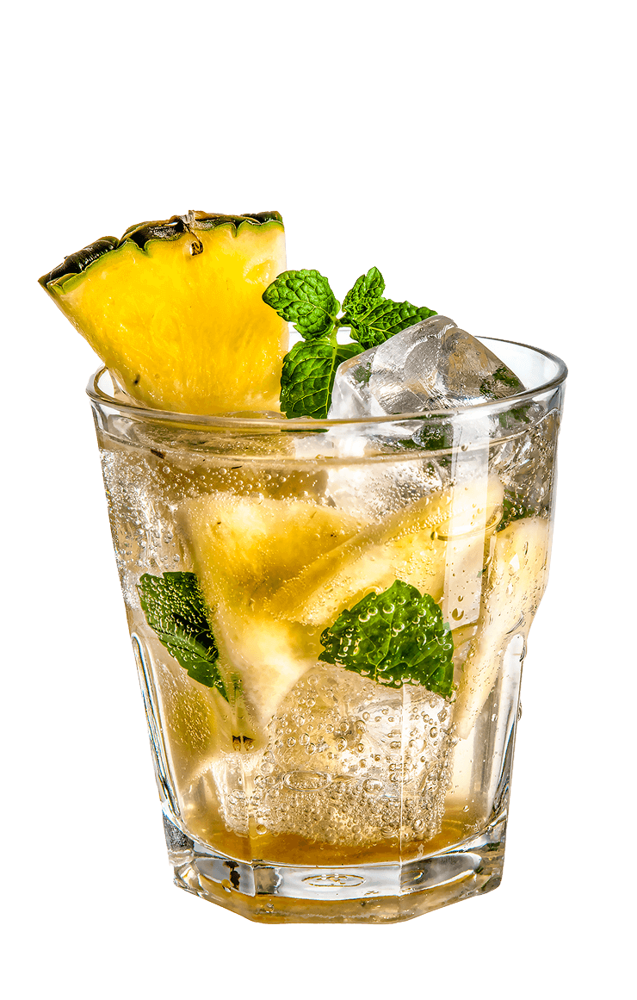
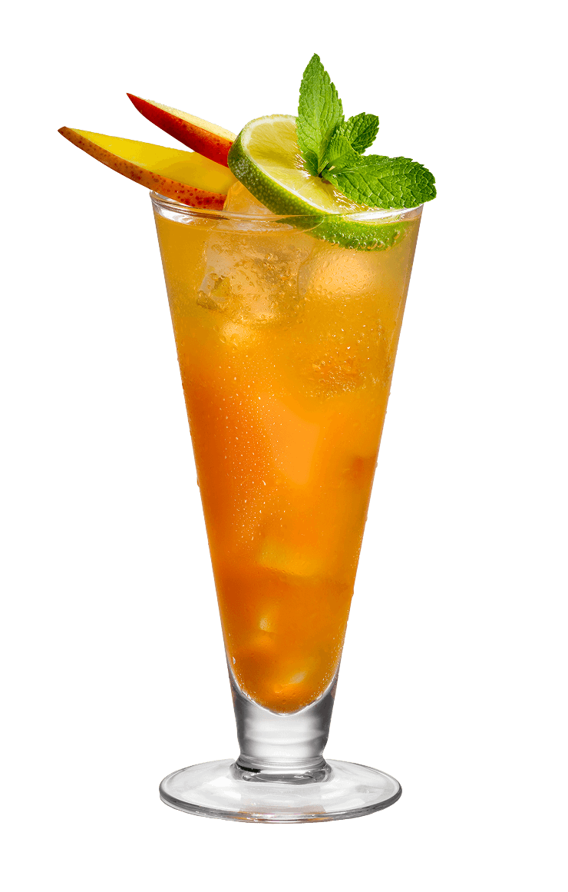
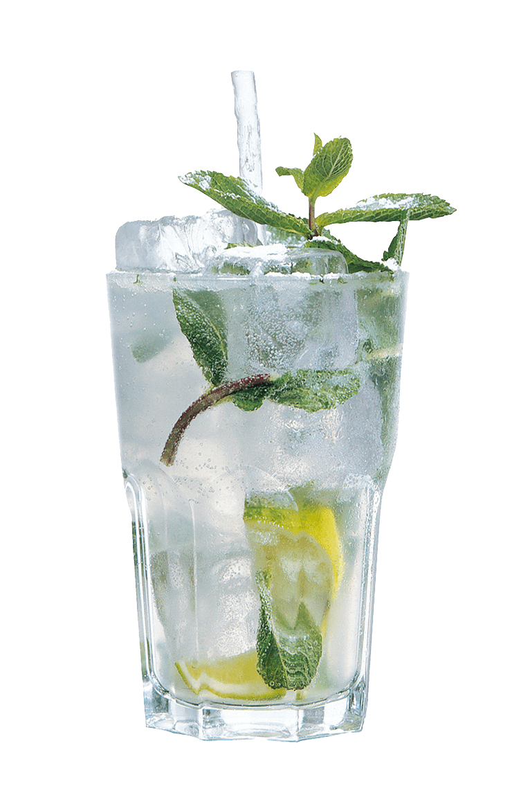
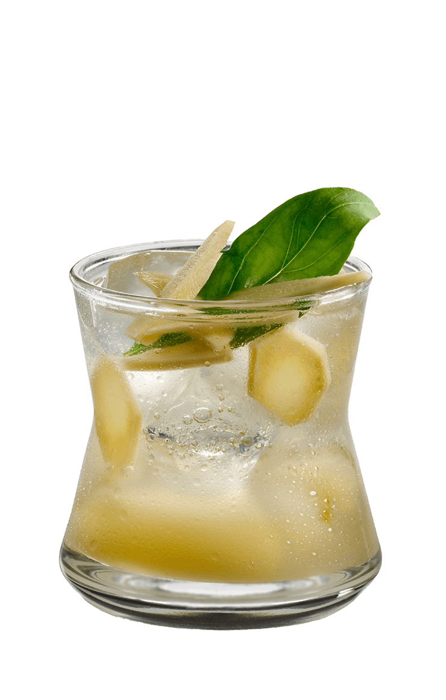

Objevte umění dokonalého míchání chutí s Mattoni! Naše přírodní minerální voda je ideálním základem pro osvěžující nealkoholické i alkoholické koktejly. Jemná perlivost a vyvážená mineralizace Mattoni podtrhne chuť každé ingredience a dodá drinkům lehkost a svěžest.

Chcete ochutnat nealkoholické drinky namíchané největšími profíky z celého světa? Pak si nenechte ujít prestižní světový šampionát Mattoni Grand Drink.
Každé dva roky získá 20 nejlepších světových barmanů nominaci na šampionát, kde předvedou svůj um a inovativní přístup k mixologii - umění míchání nápojů a tvorbě koktejlů. Vítězný pohár si odnese ten, kdo připraví originální nealkoholický koktejl, který je jednoduchý na přípravu, nízkoenergetický, lahodný a obsahuje minerální vodu Mattoni. To vše během šestiminutového limitu.
Mattoni Grand Drink pořádáme přes 25 let a za Českou republiku si namixoval v roce 2024 prvenství barman Martin Vogeltanz se svým koktejlem Nature. Ty nejlepší koktejly si můžete zkusit připravit, nebo objednat z nápojových karet předních barů po celém světě.

Od roku 2024 vám v Karlových Varech pookřejí chuťové pohárky hned dvakrát. Rozhodli jsme se dát příležitost i mladým talentům a přidali soutěž Mattoni Grand Drink Junior.
Každoročně se studenti středních gastronomických škol mohou utkat v soutěži o nejlepší nealkoholický trendy koktejl připravený s minerální vodou Mattoni. A stejně jako u světového šampionátu Mattoni Grand Drink mají budoucí barmani na přípravu časový limit. Juniorských 10 minut. Díky Grand Drink Junior máme jedinečnou příležitost být u pramene kariéry těchto talentů. Historicky první vítězkou se stala Sára Šmerdová s drinkem Osvěžující Mattonka.
Vítězslav Cirok
Zen Essence
Martin Vogeltanz
Nature
Jan Lukas
Voda
Roman Shyrokoriadov
Sangria
Sára Šmerdová
Osvěžující Matonka
Petra Kohoutková
Mangroove






